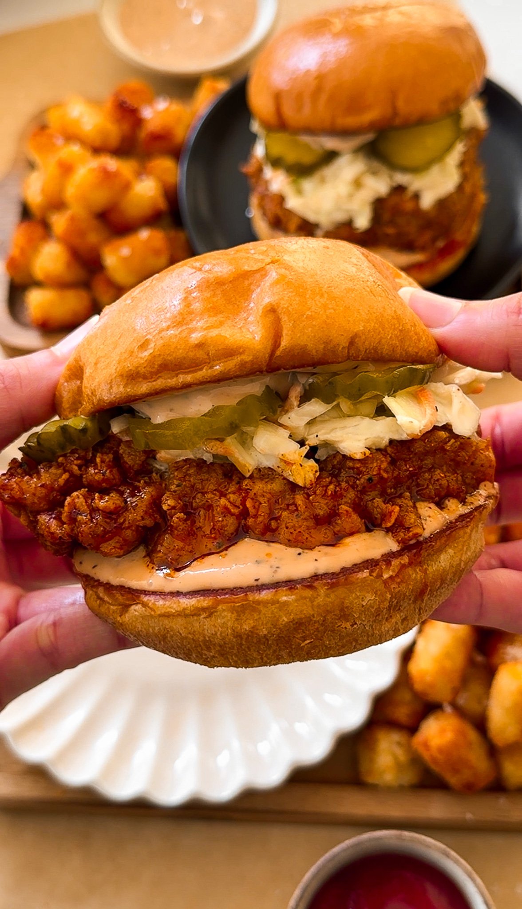

MAIN COURCE | RESTAURANT REMAKES
NASHVILLE HOT CHICKEN SANDWICHES
PREP TIME: 30 MINUTES
COOK TIME: 1 HOUR
TOTAL TIME: 1 HOUR 30 MINUTES
YIELDS: 4 TO 6 SANDWICHES
The hot chicken craze is taking over the
food
scene like wildfire but let me tell you, the
best Nashville chicken you can get is the
one
you make at home and even better! From the
crispy flakey fried chicken to the creamy
coleslaw and tangy sauce, this sandwich is
built to perfection in the flavor AND
texture
department. Now let’s dive into the secret
formula for Nashville Hot Chicken
Sandwiches!
MAIN COURSE | RESTAURANT REMAKES
NASHVILLE HOT CHCIKEN SANDWICHES
The hot chicken craze is taking over the
food
scene like wildfire but let me tell you, the
best Nashville chicken you can get is the
one
you make at home and even better! From the
crispy flakey fried chicken to the creamy
coleslaw and tangy sauce, this sandwich is
built to perfection in the flavor AND
texture
department. Now let’s dive into the secret
formula for Nashville Hot Chicken
Sandwiches!
PREP TIME: 30 MINUTES
COOK TIME: 1 HOUR
TOTAL TIME: 1 HOUR 30 MINUTES
YIELDS: 4 TO 6 SANDWICHES
INGREDIENTS
CHICKEN
2 large chicken breasts, about 1.5 pounds
peanut or vegetable oil, for frying
DRY
1 cup all purpose flour
3 tablespoons cornstarch
2 teaspoons garlic powder
2 tablespoons chili powder
2 teaspoons salt
2 teaspoons dry mustard powder
1 teaspoon black pepper
1 teaspoon baking powder
WET
3/4 cup buttermilk
1 large egg
2 tablespoons vinegar-based hot sauce
1/4 cup pickle juice
1 teaspoon baking powder
SPICY OIL
1 tablespoon light brown sugar
2 1/2 tablespoons cayenne powder, add more to taste
2 tablespoons chili powder
1 teaspoon dry mustard powder
1 teaspoon garlic powder
1 teaspoon salt, more to taste
3/4 cup frying oil
COLESLAW
3 cups coleslaw blend or 2 cups shredded green cabbage, 1/2 cup purple cabbage, 1/2 cup shredded carrots
1/4 cup mayonnaise
1/2 to 1 tablespoon yellow mustard, adjust to taste
salt, to taste
black pepper, to taste
1 tablespoon lemon juice or white vinegar
1/2 to 1 tablespoon granulated white sugar
SAUCE
1/2 cup mayonnaise
1/4 cup ketchup
2 teaspoons Worcestershire sauce
1 teaspoon black pepper
1/2 teaspoon garlic powder
OTHER
4 brioche buns
unsalted butter, for toasting buns
pickles